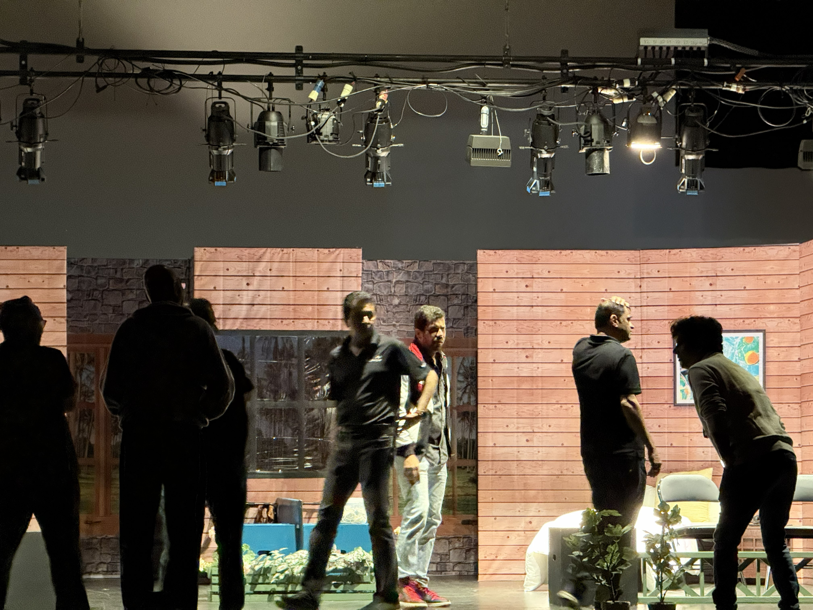

A Reflection
Leading without the answers upfront
Writing, directing, and producing plays has taught me how to lead without all the answers. Every production starts in ambiguity and becomes real through collaboration, iteration, and trust.
